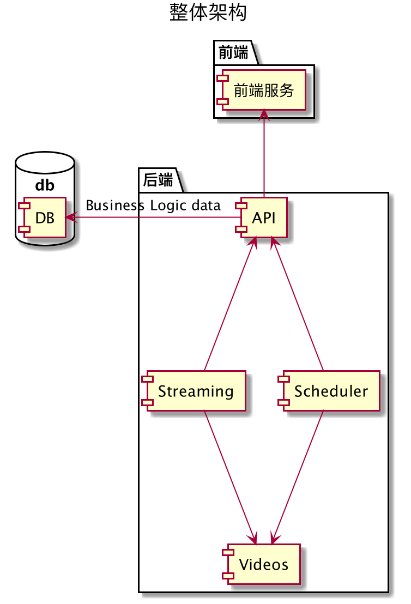

最近学习了慕课网的实战课程，Go语言实战流媒体视频网站 ，在考研前买的，现在才有时间去学习5555，在此做一个笔记，记录一下学习的收获
对课程的评价 学习了大约80%的内容，最后的前端模板渲染和上云部署没有怎么看，总的来说，对于项目功能的拆分，单元测试，限流以及对 golang 并发中的select语句有了进一步的任务；但是对于“流媒体”的处理讲的很浅，其实就是介绍了golang原生提供的对数据流处理的工具，而且代码编写使用纯文本编辑器，过程非常难看，观感很差；总的来说，对这个课程是比较失望的。
对项目功能的拆分 不同的功能写在了不同的模块中，架构大体如下

每一个模块都有一个对应 http server 监听一个端口，由前端服务对来自客户端的请求进行转发至不同的端口
对于前端服务模块，主要就是两个功能，HTML模板渲染和请求转发，但是现在貌似前者可以用nodejs替代，后者可以用Nginx替代；如果老师是希望我了解golang的模板功能和转发的两种方式，proxy 和 api 的话，那我倒是可以理解了
在scheduler模块中，我了解了生产者消费者模式以及它们之间通过channel来进行同步的实现思路，是用select语句来实现对多路 goroutine 的处理；其中还是用到了 sync.Map，并发安全的Map，大概看了一下源码，这个主要应用于多读少写的情况，如果不是的话还是乖乖地自己加锁吧
在stream模块中，使用到了golang官方提供的 http.ServeContent 和 http.Request.ParseMultipartForm 处理提交的流和发送的流，同时还使用到了限流的措施，用 bucket 算法控制一个stream服务器最大同时处理请求的个数
单元测试 golang推荐表格驱动的测试，同时提供 branchmark 测试，还可以自动生成覆盖率，内存使用，CPU使用的图表
表格驱动的测试 这里就使用 gopl 中的例子吧，求一个字符串是否对称，代码如下
1 2 3 4 5 6 7 8 9 10 11 12 13 14 15 func IsPalindrome (s string ) bool letters := make ([]rune , 0 , len (s)) for _, r := range s { if unicode.IsLetter(r) { letters = append (letters, unicode.ToLower(r)) } } n := len (letters) / 2 for i := 0 ; i < n; i++ { if letters[i] != letters[len (letters)-1 -i] { return false } } return true }
表格测试代码如下，就是定义一个struct
1 2 3 4 5 6 7 8 9 10 11 12 13 14 15 16 17 18 19 20 21 22 23 24 25 func TestIsPalindrome (t *testing.T) type args struct { s string } tests := []struct { name string args args want bool }{ {name: "isPalindrome 1" , args: args{s: "abcdefedcba" }, want: true }, {name: "isPalindrome 2" , args: args{s: "fghjklkjhgf" }, want: true }, {name: "isPalindrome 3" , args: args{s: "中国中" }, want: true }, {name: "isNotPalindrome 1" , args: args{s: "qwertyuiopjkfkcjsicisoq" }, want: false }, {name: "isNotPalindrome 2" , args: args{s: "asdfdsc" }, want: false }, } for _, tt := range tests { t.Run(tt.name, func (t *testing.T) if got := IsPalindrome(tt.args.s); got != tt.want { t.Errorf("IsPalindrome() = %v, want %v" , got, tt.want) } }) } }
可以使用go的第三方工具 github.com/cweill/gotests/ 来自动生成测试代码，Intellij IDEA 的go插件也提供了对其的支持
BenchMark 测试 对于benchmark，需要将测试函数以 Branch 开头
1 2 3 4 5 func BenchmarkIsPalindrome (b *testing.B) for i := 0 ; i < b.N; i++ { IsPalindrome("A man, a plan, a canal: Panama" ) } }
测试顺序 定义主入口 TestMain 即可
1 2 3 4 5 6 7 8 9 10 11 12 13 14 func TestMain (m *testing.M) m.Run() } func TestUserWorkFlow (t *testing.T) t.Run("Add" , testAddUserCredential) t.Run("GetCredential" , testGetUserCredential) t.Run("Get" , testGetUser) t.Run("Del" , testDeleteUser) t.Run("Reget" , testRegetUserCredential) }
测试命令 以下是一些测试的命令行语句
1 2 3 4 5 6 7 8 9 go test -cover -coverprofile=size_coverage.out -covermode=count -v github.com/schwarzeni/gopl/cpt8-test/... go tool cover -html=size_coverage.out go test -benchmem -bench=. github.com/schwarzeni/gopl/cpt8-test/simpletest go test -cpuprofile= go test -blockprofile= go test -memprofile=
限流处理 这里的限流指的是限制同时处理http请求的个数，代码逻辑如下，使用goroutine来进行消息通信
1 2 3 4 5 6 7 8 9 10 11 12 13 14 15 16 17 18 19 20 21 22 23 24 25 26 27 28 29 30 31 type ConnLimiter struct { concurrentConn int bucket chan int } func NewConnLimiter (cc int ) *ConnLimiter return &ConnLimiter{ concurrentConn: cc, bucket: make (chan int , cc), } } func (cl *ConnLimiter) GetConn () bool if len (cl.bucket) >= cl.concurrentConn { log.Println("Reached the rate limitation." ) return false } cl.bucket <- 1 return true } func (cl *ConnLimiter) ReleaseConn () c := <-cl.bucket log.Printf("New Connection coming: %d" , c) }